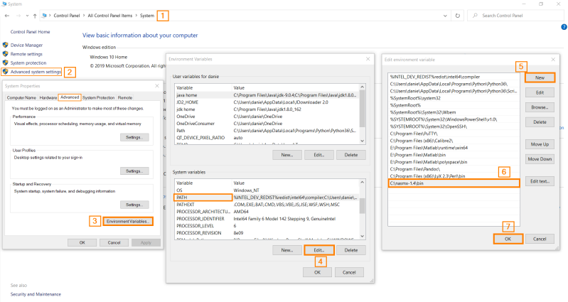
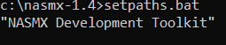
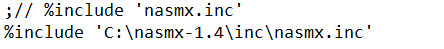
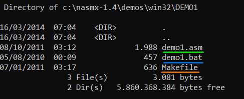

NASMX
NASM-X
NASM-X is a set of macros for the Netwide Assembler NASM
We will use it to make things
easier
http://thlorenz.com/nasmx/nasmx1.htmlhttps://github.com/thlorenz/nasmxDownload1.
download the zip
https://sourceforge.net/projects/nasmx/2. extract and
save in a folder
3. add the following enviroment variables
C:\Program Files\NASM
C:\nasmx-1.4\bin
6. restart computer so the changes take effect
7.
go to the command line(cmd) in the nasmx folder
6. edit the file C:\nasmx-1.4\demos\windemos.inc
comment:
add this line after the line commented:
%include 'C:\nasmx\inc\nasmx.inc'
7. To verify that everything
is configured properly we can try to assembly an
assembly file to an
object file from command line navigate to:
C:\nasmx-1.4\demos\win32\DEMO1
 ◇
demo1.asm is the file containing the assembly code
◇
demo1.bat is a script that will automatically assemble and link the
demo1.asm file to obtain the executable file
◇
makefile contains all the data and commands needed to transform the source code
files to an executable program
create object file from the .asm file
nasm -f win32 demo1.asm -o demo1.obj
-f →
format of the output file; in this case Microsoft
object file format for 32-bit OS
-o → name of the
output
file
{kind=link}